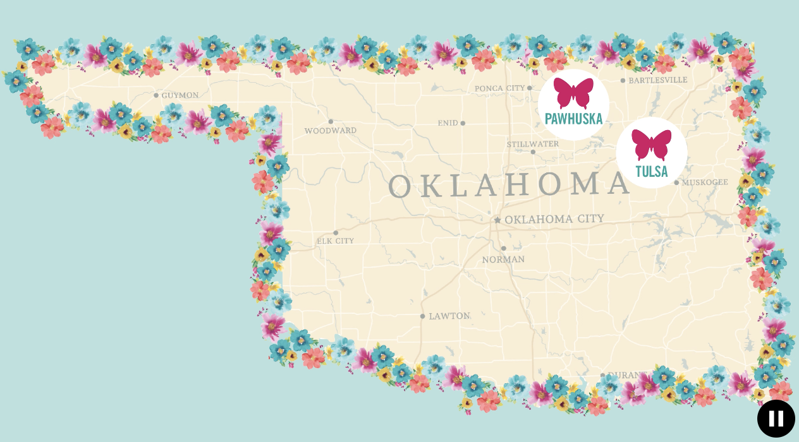

The Pioneer Woman
Everything to Know About Ree's Hometown
See how Pawhuska has transformed from a sleepy rural community to a tourist hotspot.
"What can you do in Pawhuska, Oklahoma?” A few years back, the answer may not have been so obvious. Established in 1872 and located in the heart of Osage County, the city has always had a rich history and unique culture. But few were aware of everything Pawhuska has to offer until Ree and Ladd introduced this charming town to the world.
Ree moved to Pawhuska when she married Ladd, an area cattle rancher. She was raised in nearby Bartlesville and was a city girl at heart, so she admits she was a fish out of water at first. "I was the last person anyone ever pictured moving to the country," she says.
But over time, Ree embraced her rural surroundings. In 2006, she started The Pioneer Woman blog to share updates about raising four kids on the ranch and her life in Pawhuska. That led to a cookbook in 2009 and a Food Network show of the same name in 2011. Suddenly, fans across the country wanted to know more about the sleepy little town where Ree lived. Soon, Ree and Ladd decided to take a risk on their next big project.
The Drummonds opened their first business in Pawhuska's downtown area in 2016: The Mercantile, a restaurant, bakery and general store. The Merc quickly became a must-visit for those who wanted to experience The Pioneer Woman small town lifestyle first hand.
As tourists flocked to downtown Pawhuska, Ree and Ladd decided to build on the success of the Merc with an eight room inn, pizza place, and ice cream parlor. Now, you can book a room at The Boarding House; grab a slice at P-Town Pizza; load up on ice cream at Charlie’s Sweet Shop; and even poke around the set of The Pioneer Woman during a tour of the Lodge, located on Drummond Ranch.
Ree-related activities are of course the main draw, but you'll find plenty of other interesting things to do around town. Take a tour and see why Ree and her family are proud to call Pawhuska home.
So, How Do You Get to Pawhuska?
If you love a good road trip, then you can, of course, drive to Pawhuska. We suggest listening to some true crime podcasts to make the trip more exciting!
If you're flying, the nearest airport is Tulsa International Airport (TUL), located about 56 miles away. Another option is Oklahoma City, which offers a few more direct flights from major cities but is roughly a two-hour drive from downtown Pawhuska. You can grab a rental car from most companies at both airports. Safe travels!
First Stop: Take the Ree Tour
Once you've arrived, all things Pioneer Woman await. We've gathered up every detail about Ree and Ladd's hotspots, which thousands of fans have visited over the years.